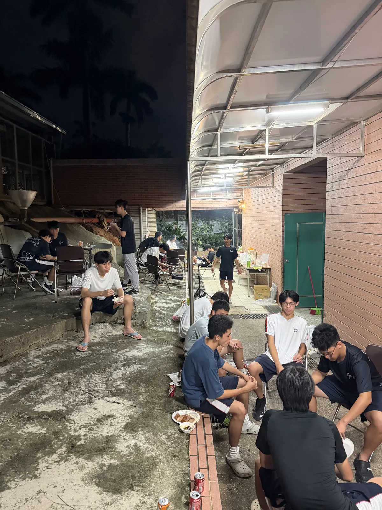
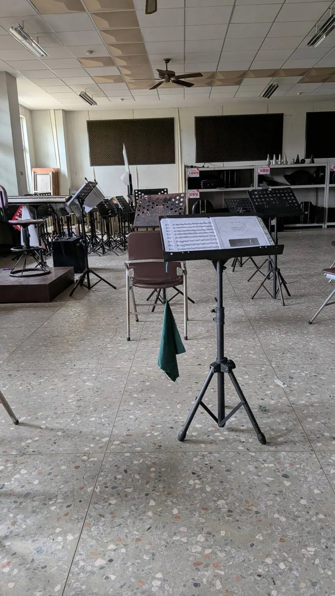

主視覺

活動相簿
依日期由新到舊排列，每場活動獨立一本相簿。

期末考結束，指導老師簡晟軒帶隊烤肉暖身 進入相簿 →

翁啟榮學長第一個到場開門，團練後的大雅路火雞肉飯 進入相簿 →
下一場活動籌備中
ALBUM．2026．持續更新中
由五字頭校友主辦的第 41 屆聯合音樂會，8 月 8 日將睽違六年重返嘉義市政府文化局音樂廳。這裡是《為伍》的活動總覽——每一場活動都有自己的獨立相簿，點進封面卡查看當天的完整影像；總覽會跟著籌備進度持續新增卡片，直到演出當天。
依日期由新到舊排列，每場活動獨立一本相簿。

